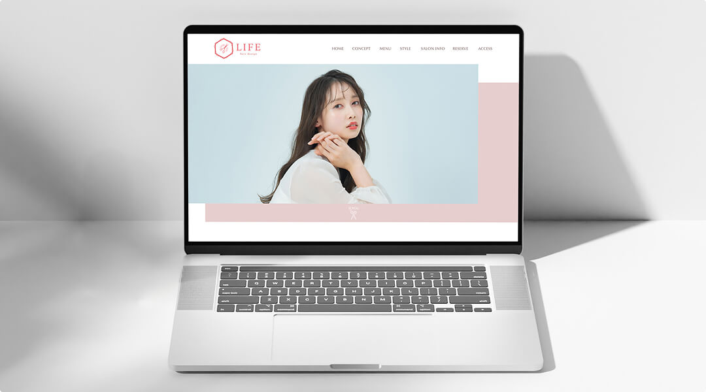
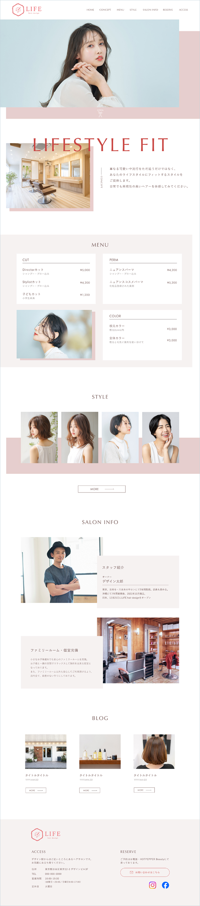

WORKS
ABOUT
CONTACT
WORKS
ABOUT
CONTACT
美容室HP
# WEBサイト # 自主制作

PC版
閉じる

ターゲット
20代〜50代女性。美容感度の高い層
課題
10周年を機にWEBサイトをリニューアルしたい
目的
認知向上・予約獲得・SNSフォロワーUP
サイト構成
ユーザーが最も気になる「理想の姿」を見せ、メインビジュアルに配置しました。次に、サロンのコンセプトを伝え、信頼を深めたタイミングで「メニュー」と「スタイル」を紹介。後半に「オーナーの想い」と「店舗情報」を配置し、来店前の不安を解消してスムーズに予約へ繋げる構成にしました。
デザイン
余白をたっぷり確保することで、リラックスできる居心地と洗練されたおしゃれなイメージ、そして清潔感のある明るい印象を目指しました。ブランドコンセプトである「FIT（寄り添い）」とロゴの六角形の重なりを、全体のデザインにも「要素の重なり」を持たせることで表現しました。
また、情報をグルーピングすることで、ユーザーが迷わず必要な情報を見つけられるよう視認性を意識しました。
さらに、コーポレートカラーをそのまま使用すると画面が少し重くなると考えたため、写真の下に配置する四角などのエレメントは不透明度を下げて調整し、ブランドのコンセプトを保ちつつ、軽やかで明るいイメージに仕上げています。
制作期間
制作
2日
デザイン
3日
使用ツール
Figma
一覧へ戻る